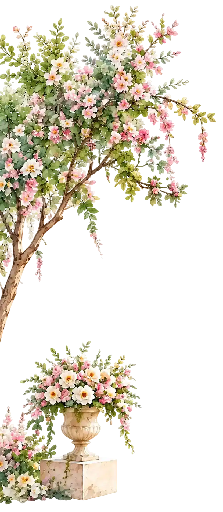
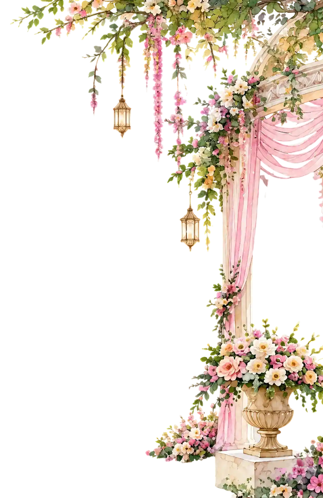
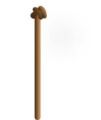

श्री गणेशाय
नमः
श्री गणेशाय
नमः


Son of Shri Ramesh Chandra Sharma & Smt. Sunita Sharma
Grandson of Late Shri Pandit Brij Mohan Sharma & Late Smt. Kamla Devi Sharma
Gotra: Bharadwaj
Daughter of Shri Vikram Mehta & Smt. Nandini Mehta
Granddaughter of Late Shri Hari Prasad Mehta & Pushpa Devi Mehta
Move the petals to reveal
the Grand Date!

Some stories begin with grand gestures. Ours started with a simple conversation.
Friendship grew into something more, and we realized life's best moments were the ones we shared together.
Fri, 12 Dec 2025
7:00 PM
Sharma Residence, Jaipur
Sat, 13 Dec 2025
11:00 AM
Sharma Residence, Jaipur
Sat, 13 Dec 2025
4:00 PM
Sharma Residence, Jaipur
Sat, 13 Dec 2025
7:30 PM
Sharma Residence, Jaipur
Sun, 14 Dec 2025
8:00 PM
The Grand Palace, Jaipur
Mon, 15 Dec 2025
8:00 PM
The Grand Palace, Jaipur
Swipe the card aside
With Best Compliments From:
Shri Suresh Sharma & Family (Chacha-Chachi)
Shri Manoj Sharma & Family (Tau-Tai)
Smt. Asha Gupta & Family (Bua)
Shri Rajendra Mehta & Family (Mama-Mami)
A Note From Us
We can’t wait to celebrate this special day with you.
Mr. Joshi and Family
Your Presence Means the World to Us